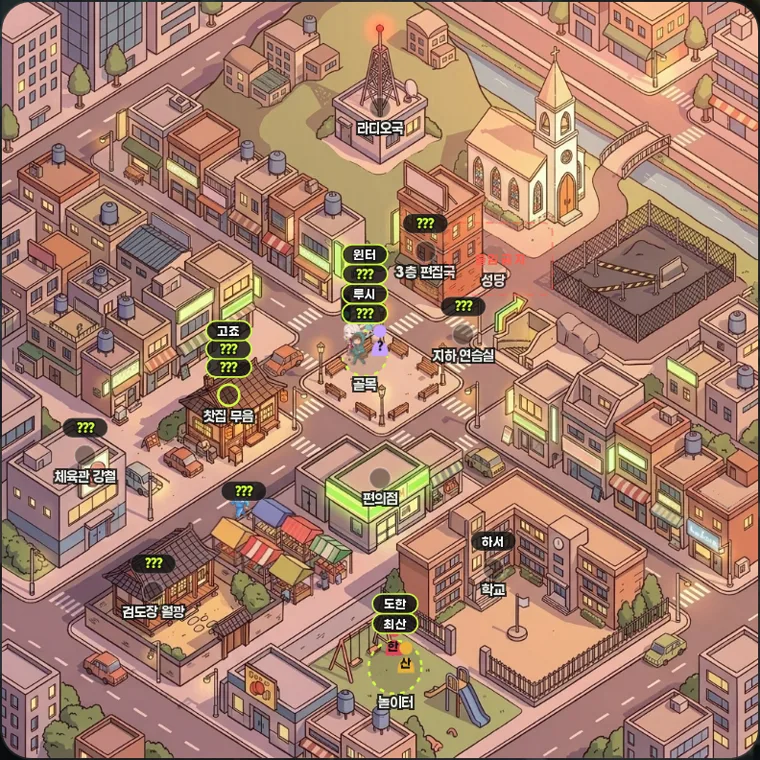
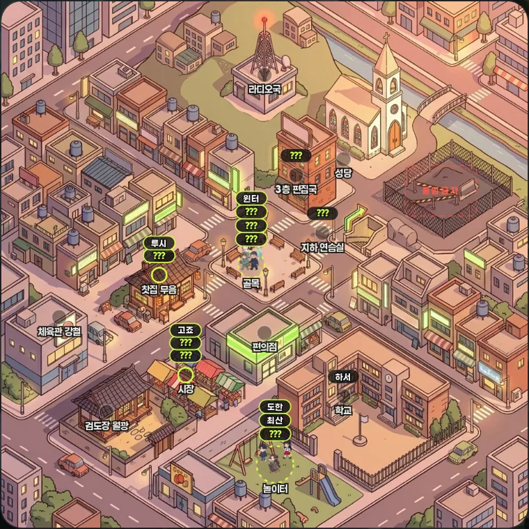
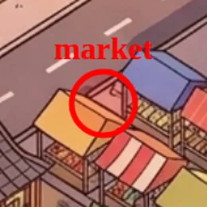
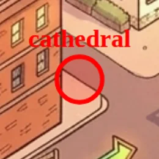
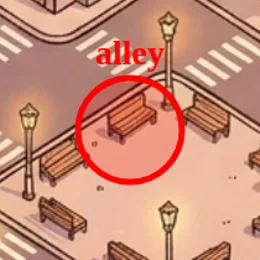
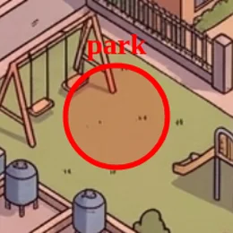
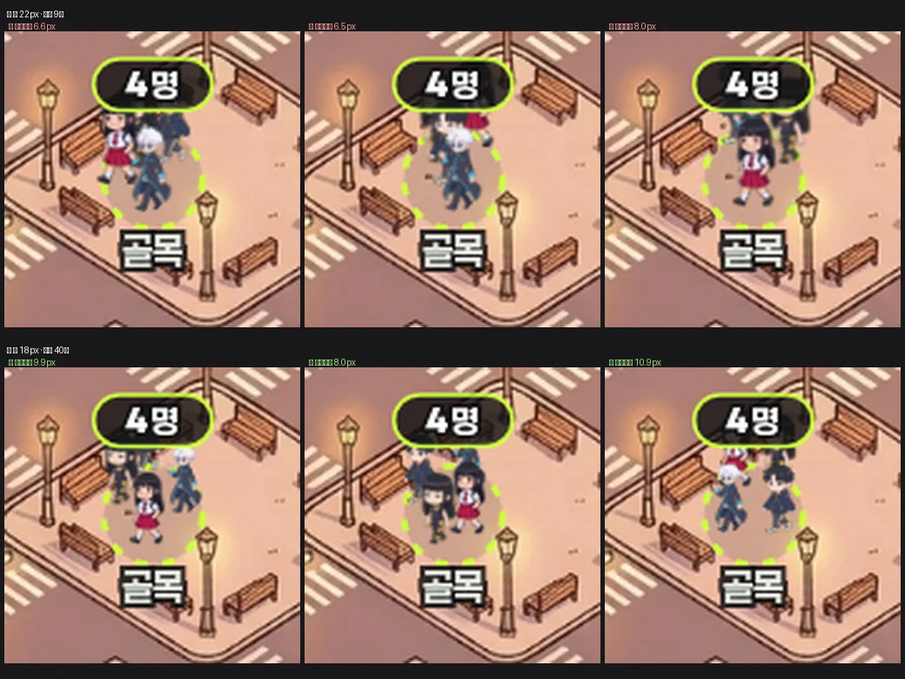

운영자 260811 “이 개같은 지도 아예 싸그리 엎어버려, 관련된 코드도. 차량 통제 맨날 개선하는데 개선이 한번도 안 됨.”
지목된 «차»는 배경 그림에 구워진 주차 차량이 아니라 «이상하게 날아다니는 벌레같은 거» = 도로를 벗어나 건물·언덕 위를 떠다니던
.ymp-car 캡슐 26대였다. 뿌리 = 배경이 생성 이미지인데 도로·마스크·가림체를 손으로 트레이싱하는 구조 —
배경을 다시 구울 때마다 좌표가 침묵 실효해서 v4→v5→v7 재실측을 반복해도 수렴하지 못했다. 이번엔 고치지 않고 축을 통째로 내렸다.


실브라우저 실측(playwright · ?qa=1#map 딥링크 · 420×900 @2x · 세계시각 낮 고정). 두 컷 모두 같은 하니스·같은 로스터.
??? 3~4장 수직 스택N명)
종전 = 사람 수만큼 이름표(17장). 같은 자리에 여럿이면 13px씩 세로로 쌓아 올려서, 3명만 모여도 위 장소 라벨을 밟았다.
재건 = 장소 수만큼 핀(12장 · 재실자 0이면 미표시). 누가 있는지는 핀을 탭해 명단으로 본다 — 시트는 기존 #yin 100% 계승(새 부품 0).
원인 = offlimits가 YMAP_POS(그림 실측 좌표계)에 없어 논리좌표(places.json 66,34)로 폴백했고, 그 자리가 성당 언덕이었다.
격자 오버레이 실측 결과 그림 속 펜스 공터 = x 71.8~95 · y 27.7~45.2 → 중심 (83.5, 36) 등재.
| 축 | 현물 | 처분 |
|---|---|---|
| 도로 중심선 | YMAP_ROADS_TONE (12도로 × 2톤) | 철거 — 배경 재생성마다 침묵 실효 |
| 차량 | yLaneOf · ymLanes · ymCarsBuild · 주행 루프 | 철거 — 왕복 26대 전량 |
| 픽셀 도로 마스크 | road_mask_{day,night}.png | 파일 삭제 |
| 전경 가림체 | YMAP_FG · ymFgBuild (폴리곤 8 × 2톤) | 철거 |
| 신호등 | ymRed · #ymLights · .ymp-light | 철거 — 멈출 차가 없다 |
| 재실측 도구 | shared/yeta_map_trace.py (numpy·scipy·PIL) | 파일 삭제 |
| 짝 게이트 | check_map_bg_pair · YMAP_BG_SHA · YMAP_FG_FP | 철거 — 지킬 짝이 없어졌다 |
| 개별 이름표 | .ymp-tag × 사람 수(17) | 장소 핀으로 통합 |
| 배경 그림 | map_{day,night}.png · 세계시각 스왑 | 유지 |
| 구역·건물 좌표 | YMAP_ZONE · YMAP_POS | 유지 |
| 주민 스프라이트 | .ymp-walker · 구역 내 배회 · 산개 | 유지 |
| 동선 엔진 | ymRoutineOf · ymPlaceOf · ymTransitOf | 유지(러너 등가 · 게이트 그대로) |
| 실내 뷰·신당 | #yin · yInRender · ySnRender · 향불 링 | 유지 + 전 장소로 개방 |
배경 스왑 비용도 같이 내려갔다 — 종전엔 낮/밤이 바뀔 때 도로 좌표·픽셀 마스크·가림체 3종을 동시 재생성했지만,
지금 지도가 배경에서 읽는 값은 0이라 href 한 줄 교체로 끝난다. 배경을 다시 구워도 실효할 좌표가 없다.
| 부품 | 정본 셀렉터·값 | 재건에서의 쓰임 |
|---|---|---|
| 핀 필 | .ymp-tag rect — 30×13 rx6.5 · fill rgba(18,18,18,.8) | 그대로. 개수만 17 → 장소당 1 |
| 핀 글자 | .ymp-tag text — 8px · var(--fw-b) · paint-order:stroke | 그대로. 내용만 이름 → N명 |
| 붐빔 | .ymp-tag.meet rect — stroke var(--accent) | 그대로. 2명↑ 라임 링 |
| 미대면 | .ymp-tag.unmet text — fill var(--accent) | 그대로. 그 자리 전원 미대면이면 강조색 |
| 명단 시트 | #yin · .yin-bg/.yin-ttl/.yin-look/.yin-empty | 그대로. 씬 없는 장소는 <img> 한 줄만 생략 |
| 명단 행 | .ypick-row + .yp-col/.yp-name/.yp-tag | 그대로(리스트 정본) |
새 색·px·blur·radius·컴포넌트 창작 0. :root 신규 토큰 0 — design-tokens.lock 54개 불변.
운영자 260811 “그 안에서 캐릭터도 둥실둥실 떠다니는데 … 골목이나 이런 장애물 없는 부분 아니면 캐릭터가 안 보이고 그냥 그 위치 위에 표기만 있으면 됨
(캐릭터가 건물 위에 떠다니게 하지 마라 ← 가 중점)”
배회 구획 4개를 그림 위에 실측으로 얹어 「사람이 서 있어도 말이 되는가」를 하나씩 봤다. 붉은 원 = 종전 구획.

좌판 차양 지붕 위

도로 + 건물 모서리

광장 포장 — 단 벤치를 물고 있어 이동

놀이터 흙바닥 — 장애물 0
처방 = YMAP_ZONE을 「스프라이트가 실제로 발을 딛는 열린 바닥」만 등재하는 표로 재정의.
여기 없는 장소는 스프라이트 미표시 = 핀 표기만. 지붕·차양·도로·건물 모서리는 등재 금지 — 이 규칙을 주석으로 못 박아 다음 세션이 지붕 위에 구획을 다시 얹지 못하게 했다.
alley는 종전 (48, 46.5, r3)이 광장 벤치를 정통으로 물어(가림체 철거로 벤치 위에 겹쳐 서 보임)
1u 격자 실측한 벤치 사이 열린 포장 (47.5, 50, r2.5)로 이동. DOM 실측: 표시 스프라이트 = 골목 4 + 놀이터 3 = 7명, 그 밖 0명.
남은 한계(정직 기록): 골목에 4명이 모이면 서로 겹쳐 보인다 — 스프라이트 폭 4.4u > 광장 열린 폭 5u 라 원을 키우지 않는 한 못 푼다. 키우면 다시 벤치를 문다(= 운영자 규칙과 상충). 종전에도 같은 겹침이 있었고 이번 변경이 악화시킨 건 아니다.
| 인물 | 종전 | 등재한 생김새(정본 = 각자의 얼굴 아트 실열람) |
|---|---|---|
서예은 seyeun | 스프라이트 없음 | 긴 생머리·일자 앞머리 · 파란 눈 · 금 십자 장식 검은 초커 + 가는 금 체인 · 어두운 민소매 / 노란 포인트 |
고죠 gojo | 스프라이트 없음 | 백발 스파이키 · 작은 원형 파란 선글라스 · 하이넥 롱코트 · 나른한 손인사 / 하늘색 포인트 |
레제 reze | 스프라이트 없음 | 흑보라 머리 옆 쪽머리 + 머리띠 · 초록 눈 · 흰 민소매 위 카페 앞치마 · 쟁반 / 연보라 포인트 |
최산 san | 스프라이트 없음 | 검은 머리 잔앞머리 · 가는 금 체인 · 수줍은 미소 · 무대 밖 캐주얼 / 앰버골드 포인트 |
프리실라 drusilla | 스프라이트 없음 | 은백 굵은 땋기 한 갈래 · 보랏빛 눈 · 붉은 입술 · 전신 검정 하이넥 · 어깨 위 까마귀 / 진홍 포인트 (정본 = 카드 §겉모습) |
종전 yeta_map_char.py CHARS = 11인만 등재 → 나머지 6인은 지도에서 이니셜 실루엣 폴백으로만 보였다(운영자 스샷의 「산」·「한」 색 덩어리).
등재 후 로스터 17인 = CHARS 17인 짝 일치. 프롬프트에 인물 고유명·원작명은 넣지 않는다(형제 11인과 같은 규약 = 생김새 서술만) · 멱등이라 실행분은 없는 6장만.
정본 대조 실측: 서예은 금 십자 초커·노란 포인트 / 고죠 원형 파란 선글라스·백발 / 레제 찻잔 쟁반·옆 쪽머리·초록 눈 /
최산 금 체인·후드 / 프리실라 어깨 위 까마귀·은백 땋기·전신 검정. 크로마키 잔여 초록 0 · 투명 배경 정상.
부수 실측: 스프라이트 404가 사라져 지도 JS 오류 7건 → 1건(남은 1건 = 외부 리소스 연결 실패 · 지도와 무관).
운영자 260811 "스프라이트 축소로 골목 겹침 풀어줘". 축소를 먼저 재보니 단독으론 부족했다 — 원인이 크기가 아니라 목표점 뽑기였다. 골목 배치반경은 9.5px인데 4명이 12px씩 벌어지려면 정사각 배치(이론 상한 13.4px)에 가까워야 하고, 9회 랜덤은 그걸 거의 못 찾아 93%가 폴백 = 산개가 사실상 꺼져 있었다.
| 스프라이트 한 변 | 시도 9회 (종전) | 시도 40회 |
|---|---|---|
| 22px — 종전 | 21.9% | 11.8% |
| 20px | 19.3% | 8.1% |
| 18px — 채택 | 15.4% | 4.5% |
| 16px | 11.5% | 2.0% |
세로로 어긋난 쌍은 아이소메트릭의 정상 앞뒤 겹침(painter 정렬)이라 지표에서 뺐다 — 그걸 세면 크기와 무관하게 늘 «겹침»으로 나온다.
18px 채택 = 겹침 21.9% → 4.5%(5배)를 크기 18% 감소로 산다. 16px면 2.0%까지 가지만 27% 감소인데,
이 지도는 확대·이동이 없는 고정 뷰(viewBox 고정 · touch-action:manipulation)라 더 줄이면 인물 식별이 무너진다.
조기채택은 남겼다 — 넓은 존(놀이터 r=3.5)은 지금도 바로 통과해 평균 반경비 0.75 → 0.76으로 무변.
조기채택을 빼고 «최원점»만 쓰면 0.90 = 다들 원 테두리에 달라붙는 부자연이 된다.

정상상태 실측(도달 후 각자 재타겟 — 초기 순차배치만 보면 1·2번이 거의 무제약이라 과소평가된다):
쌍 최소간격 6.5~8.0px → 8.0~10.9px. 스프라이트 실폭은 평균 11.6 → 9.5px로 내려가 간격 아래로 들어간다.
탭 면적은 안 줄였다 — 투명 히트렉트를 종전 22px로 남겨, 이미지 바깥 가장자리를 눌러도 그 사람이 열리는 것을 실클릭으로 확인(히트렉트 가장자리 → gojo · 이미지 중앙 → gojo).
404 폴백 실루엣도 같은 배율로 묶어 혼자 옛 크기로 튀지 않게 했다.
운영자 260811 후속 "지금 이렇게 보이는건 좋아. 이대로 이름 표기는 유지해도 됨" ·
"내가 첨부한 내용처럼 보이면 된다"(첨부 = 사람마다 이름표가 세로로 쌓인 현행 화면).
→ §2·§5의 「장소당 N명 핀 1장」은 원복했다. 한 자리에 여럿이면 이름표가 세로로 쌓이는 것도 그 화면 그대로 = 의도된 모습이다.
아래 §1 컷이 원복 후 최종 화면(tags 17 · 표시 15).
원복해도 남는 것: 차량·도로·마스크·가림체 철거(§4) · 출입금지 정정(§3) ·
스프라이트는 열린 바닥에서만(§6 — 시장·성당·편집국은 이름표만, 캐릭터는 안 떠다닌다) ·
미니미 17인(§7) · 골목 겹침 수정(§8). 이름표 축 하나만 되돌렸다.
운영자가 지적한 「캐릭터가 안 보인다」 = main에 char_san.png 등 6장이 없어 이니셜 실루엣(「산」)으로 떨어진 것 — §7이 그 6장을 채운다.
실측 하니스 = tests/test_backstack.js 관례 계승(자체 http 서버 + playwright 탐색 + ?qa=1 딥링크 · API·places.json 스텁).
JS 오류 전후 동수(신규 0) · python3 shared/check_refs.py 전체 게이트 rc=0.